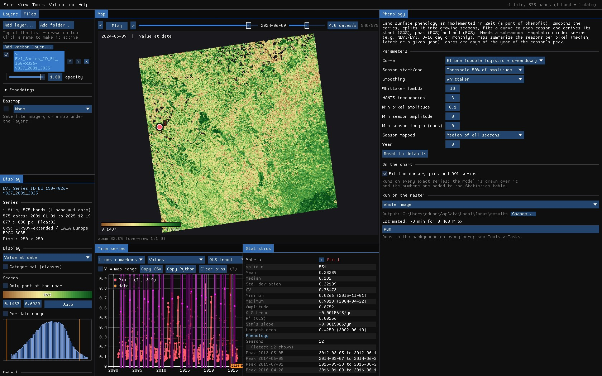
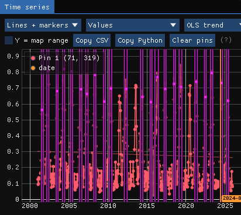
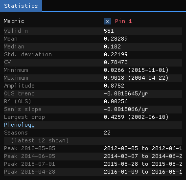
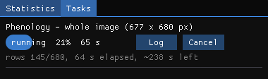
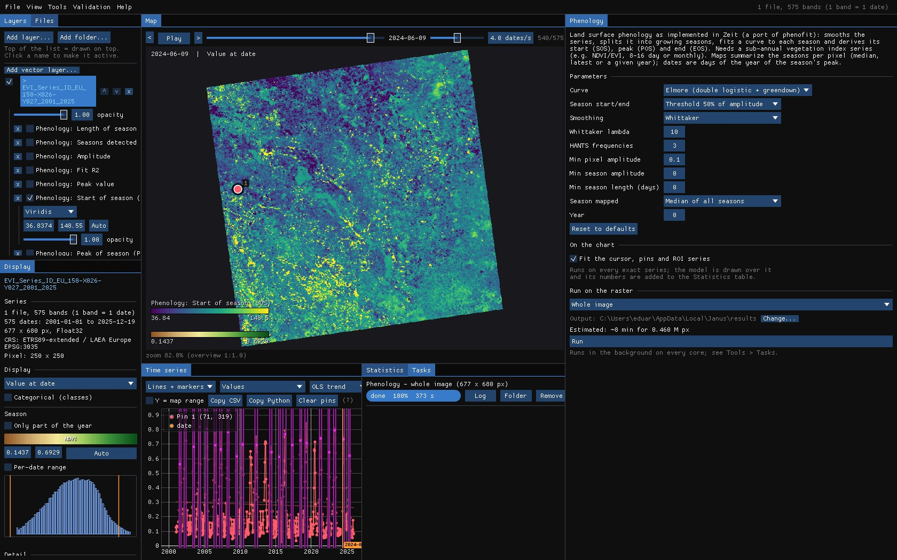
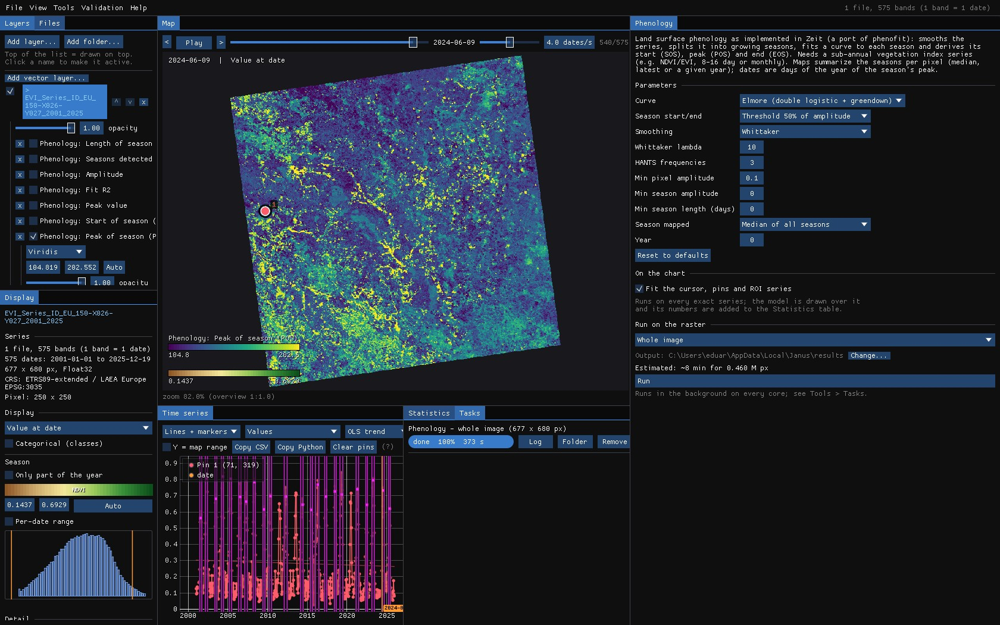
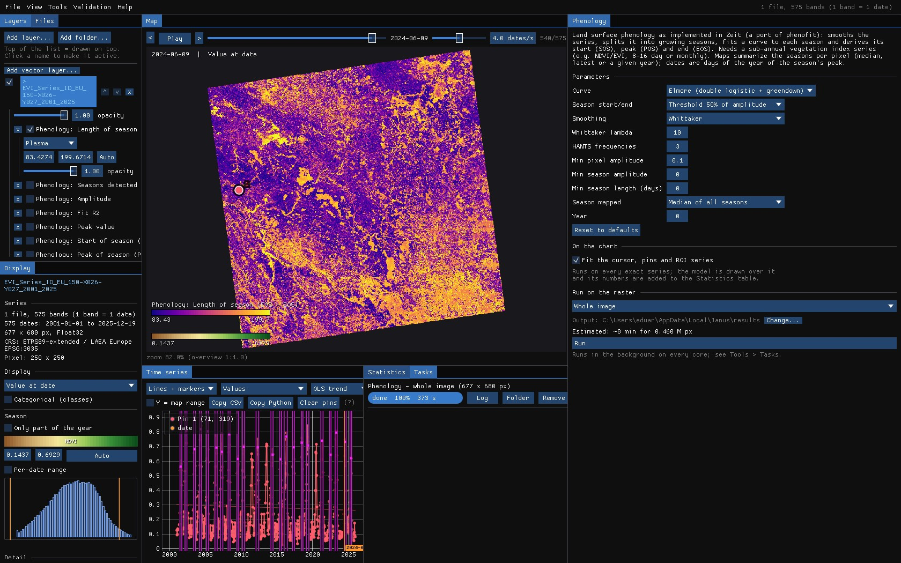

01The idea
The tool is Zeit's port of phenofit (Kong et al. 2022). It smooths the series to find its seasons, from one trough to the next; fits a curve to the observations of each season (a double logistic, by default Elmore's); and reads from the curve:
- SOS
- Start of season: the day the curve rises past the threshold (by default, half of the season's amplitude).
- POS
- Peak of season: the day of the curve's maximum.
- EOS
- End of season: the day it falls back past the threshold.
- LOS
- Length of season: EOS minus SOS, in days.
It needs a sub-annual vegetation index (NDVI, EVI; 8 or 16 days, or monthly) with at least six observations a year. Dates on the maps are days of the year.
02The example
The same MODIS EVI series as the BFAST guide: every 16 days from 2001 to 2025, 250 m, over 170 × 170 km of farmland in western France. The pin is on a field.
03On the chart
Tools → Phenology. With the chart fit on, the seasons' curves are drawn over the series, with vertical lines at each start, peak and end, and the Statistics table lists the seasons.






The peaks move: 5 May in 2012, 5 June in 2014, 1 July in 2015. That is the crop rotation: a winter cereal peaks in spring, sunflower or maize in summer. Hover the map to fit any other pixel.
04The parameters
| Parameter | Default | What it does |
|---|---|---|
| Curve | elmore | The function fitted to each season: Beck, Elmore, Gu, Zhang (double logistics), asymmetric Gaussian, Klos, or the double logistic of phenofit. |
| Season start/end | trs5 | How SOS and EOS are read: a threshold of the amplitude (50%, 20%, 60%), the derivative, or Zhang's or Gu's methods. |
| Smoothing | whittaker | Used to find the seasons (the curves are fitted to the observations): Whittaker, HANTS or none. |
| Whittaker lambda | 10 | Larger is smoother: fewer, broader seasons. |
| HANTS frequencies | 3 | Harmonics a year, with HANTS. |
| Min pixel amplitude | 0.1 | Pixels whose series varies less (water, towns, bare rock) are skipped. In the index's units: 1000 for NDVI × 10000. |
| Min season amplitude | 0 | Seasons that rise less above their troughs are dropped. |
| Min season length | 0 | Seasons shorter than this, in days, are dropped. |
| Season mapped | median | How a pixel's seasons become one map: the median of all, the latest, or the one peaking in Year. |
For a field with a double crop, or grassland cut twice, lower lambda (or raise the HANTS frequencies) until the chart splits the year into two seasons; for a noisy series, raise it.
05Running it
Phenology fits a curve to every season of every pixel: 0.46 million pixels and 25 years here, about 6 minutes on every core (the window estimated 8). It runs in the background; the map and the chart stay usable.

06The maps
With Season mapped on the median, each map is the typical year of each pixel:






| Map | Meaning |
|---|---|
| SOS, POS, EOS | Start, peak and end of the season, day of the year. |
| Length of season | EOS − SOS, in days. |
| Peak value | The index at the peak. |
| Amplitude | The rise of the season above its troughs. |
| Fit R² | How well the curves fit the observations. |
| Seasons detected | How many seasons the pixel has. |
07What next
- One year: Season mapped → the year below maps the season peaking in a given year, to compare a drought year with a normal one.
- Breaks in the seasons: BFAST finds when the season's shape changed.
- Classes from the curves: Tools → TWDTW classification classifies pixels by patterns taken from pins.
- Script it:
zeit.phenologyin Python.
08References
- Kong, D., McVicar, T. R., Xiao, M., Zhang, Y., Peña-Arancibia, J. L., Filippa, G., Xie, Y., Gu, X. (2022). phenofit: an R package for extracting vegetation phenology from time series remote sensing. Methods in Ecology and Evolution, 13, 1508–1527.
- Elmore, A. J., Guinn, S. M., Minsley, B. J., Richardson, A. D. (2012). Landscape controls on the timing of spring, autumn, and growing season length in mid-Atlantic forests. Global Change Biology, 18, 656–674.
- Zeit: the library behind the tools of Janus.